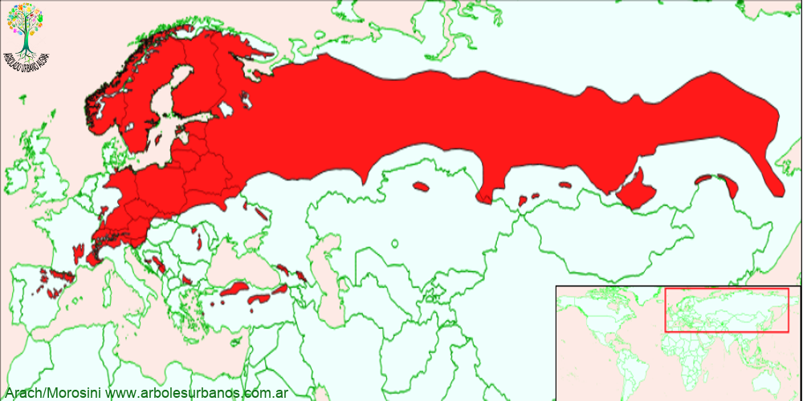

Click en las imágenes para ampliar

{kind=link}
{kind=link}
{kind=link}
{kind=link}
{kind=link}
{kind=link}
Nombre científico: Pinus sylvestris
Familia botánica: Pináceas
Origen: Es el pino de mayor distribución natural, crece desde el estremo este de Europa hasta el océano Pacífico atravesando todo Asia, desde el círcilo polar ártico, hasta en mar Mediterraneo, en altitudes que van desde el nivel del mar hasta los 2500 metros sobre el nivel del mar. También crece en norteamérica donde fué introducido en el siglo XVII, actualmente en ciertos lugares de la costa este de Estados Unidos y Canadá se encuentra naturalizado
Descripción general: Este pino alcanza los 30 metros de altura y superan los ejemplares mayores el metro y medio de diámetro, generalmente con un tronco principal. Posee una copa de forma muy variable desde piramidal comprimida, hasta formas más extensas y a veces con las ramas estratificadas. Su corteza juvenil es de color naranja, fina y escamosa, para virar cuando es adulta a una corteza gruesa, grisácea, fracturada en placas.
Hojas: Son aciculares, reunidas en fascículos de a dos, son rectas y de hasta 9 cm de largo, son de color verde azulado, aunque a veces puede ser verde más oscuro.
Estóbilos: Tanto los estróbilos masculinos, como los femeninos se encuentran en la misma planta, los masculinos agrupados en las ramas jóvenes, a la madurez alcanzan un color amarillo, son de forma oblonga de hasta 2,5 cm. de largo. Los femeninos son en principio de color verde llega al color marrón a su maduréz, tiene forma se color , son conos de entre 5 y 7,5 cm de largo aparecen solitarias o en grupos de a 2 o 3.
Reproducción: La manera más común de multiplicarlo es mediante semillas, ya que posee un alto porcentaje de viabilidad, estas tiene que tener una estratificación de 60 días, previo a la siembra.
USOS : En su lugar de origen se lo utiliza forestalmente tanto para la producción de madera aserrada, como para la producción de pasta celulósica; además es utilizado para estabilizar terrenos y recuperar terrenos degradados. En parquizaciones se lo utiliza tanto como ejemplar aislado, como en grupos.
PARTICULARIDADES: El epíteto “sylvestris” fué puesto por Linneo, cuando lo clasificó, esto es debido a que es la única especie del género que crece en Finlandia